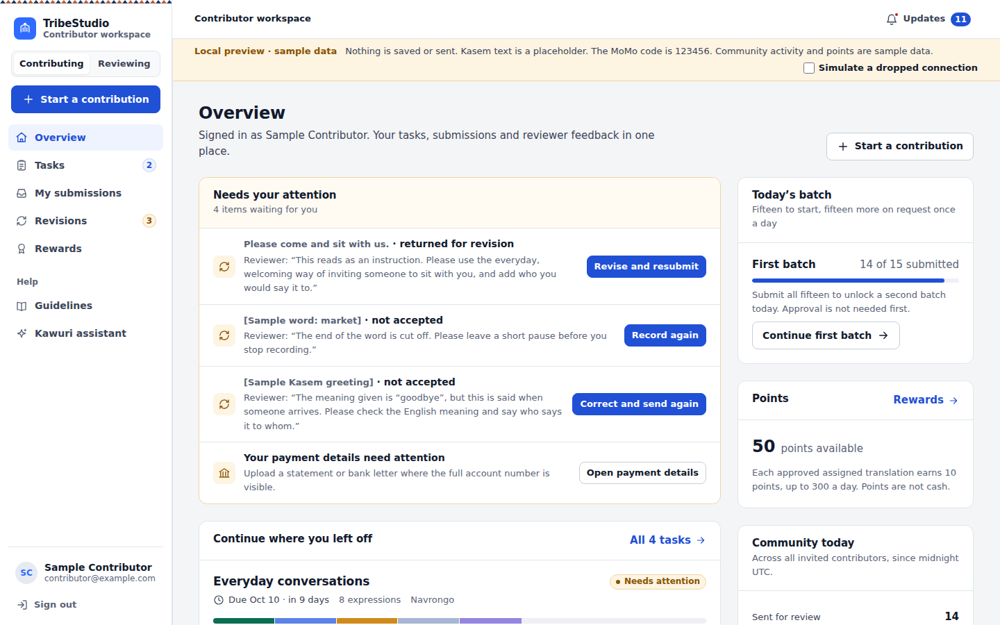
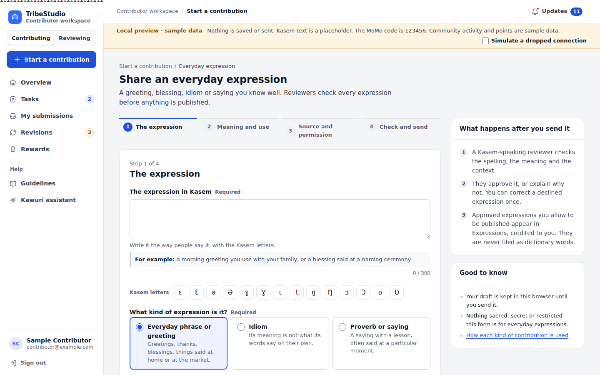
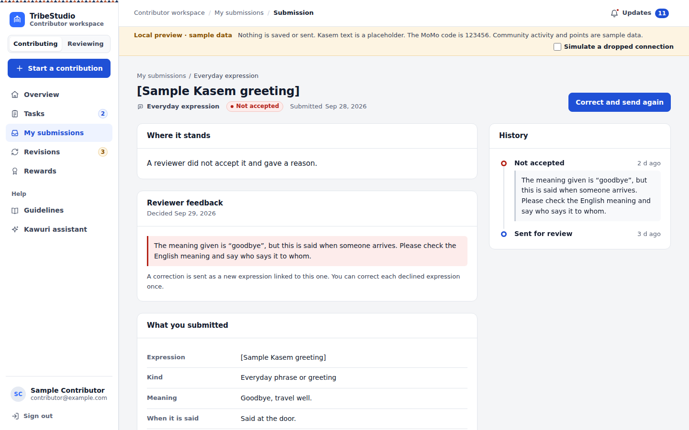
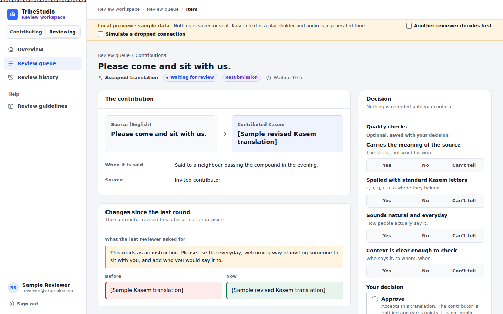
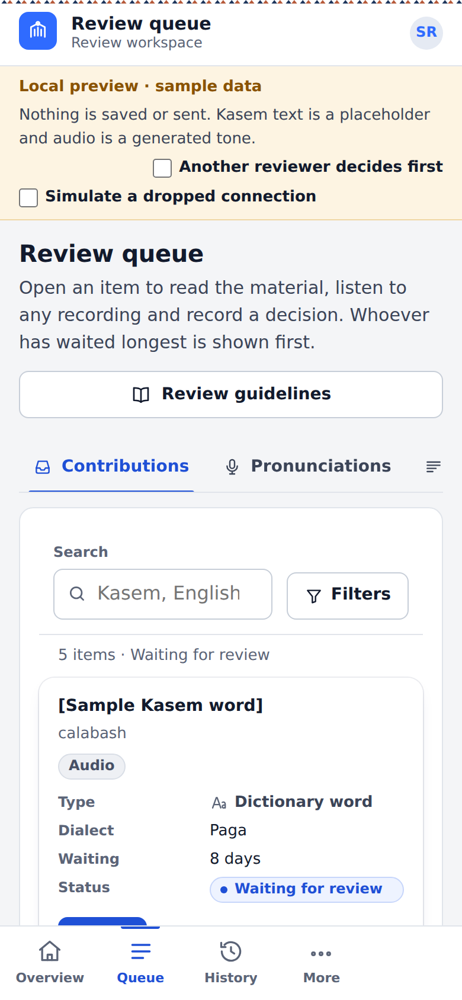

The TribeStudio contributor portal has been redesigned from the ground up, together with the review workspace. Contributors can see at a glance what needs their attention, share words, expressions and pronunciations through guided forms, and follow every submission from draft to decision. Reviewers get one calm place to read, listen and decide, with safeguards that stop decisions from clashing.
Availability: the redesign is complete and tested in the Indigen World repository as of October 1, 2026. It is not live yet. It goes live when TribeStudio and five backend functions are deployed; this article will be updated when that is verified.

The contributor overview, shown in the local preview with sample data. Kasem text appears as a bracketed placeholder.
For contributors: what needs you, and what to do next
The overview starts with anything waiting for you: a translation returned with feedback, a declined expression you can correct, a recording to try again, or payment details that need attention. Below it is the task you were working on, with a button to continue exactly where you stopped. Counts of your submissions are your own; community figures appear only when there is real activity to show.
Navigation is the same everywhere: Overview, Tasks, My submissions, Revisions and Rewards, with Guidelines and the Kawuri assistant under Help. On a phone they sit in a bar at the bottom of the screen, which steps aside while you type so it never covers your work.
Guided forms that keep your work safe
Start a contribution offers four paths: your assigned tasks, an everyday expression, a dictionary word, or a recording of how a word is said. Each form asks one thing at a time, marks what is required, and shows an example beside anything unfamiliar — like When would someone say this?

Sharing an everyday expression, step by step. Local preview with sample data.
Your draft is kept as you type. If the connection drops, nothing you wrote is lost, and you can try again when it returns.
Sending twice by accident does not create two submissions. Once the new backend is live, a retried send is recognised and filed once.
You can record a pronunciation in the browser, listen back and record again, or upload a short audio file instead.
Words, expressions and recordings each keep their own type. An expression is published to Expressions, never filed as a dictionary word; a word goes to the dictionary; a recording is attached to the word it was made for.
Follow every submission
My submissions lists everything you have saved or sent, with search and filters for type and status. Open one to see where it stands, what the reviewer said, what you sent and each round of review. Approval and publication are shown as separate steps, because they are: approved work becomes public only when it is published, and only with your permission.

A submission with the reviewer’s feedback and the next step. Local preview with sample data.
Revisions gathers everything that has come back to you, with the feedback beside it. Earlier versions are kept, so a revision never silently replaces what you sent before.
Rewards, stated plainly
The Rewards page shows the points you have available, the points you have earned, and the translations still awaiting review. Points come from approved assigned translations, and the page always shows the rules in force — by default, 10 points for each one, up to 300 a day. Points are not money, and the page says so: there is no cash balance. By default, 300 points can be exchanged for GH₵5 of airtime or mobile data; the team reviews each request and delivers it by hand, so it is not instant. A ledger lists every award and request with its date and status.
For reviewers: read, listen, decide
Accounts with review permission now have a full workspace at Reviewing. Anyone who is both a contributor and a reviewer switches sides from the top of the sidebar.

Reviewing a resubmission: the source beside the contribution, what changed since the last round, and the decision panel. Local preview with sample data.
The overview counts what is waiting in every queue: contributions, pronunciations, sentences, Kasem names and adverts.
The queue shows whoever has waited longest first, and can be filtered by type, dialect and waiting time.
Each item shows the source and the contribution side by side, plays any recording, and, for a resubmission, shows what the last reviewer asked for and what changed.
Every decision says what it will do before you choose it. Sending work back needs written feedback, and reusable reasons help you start it. Nothing is recorded until you confirm.
You cannot decide your own work. If someone else decides an item while you are reading it, your decision is refused instead of overwriting theirs — the review service checks this too, not just the screen.
A sentence is confirmed only when two independent speakers judge it the same way; disagreement is kept for discussion.

The review queue on a phone. Filters fold away so the work comes first. Local preview with sample data.